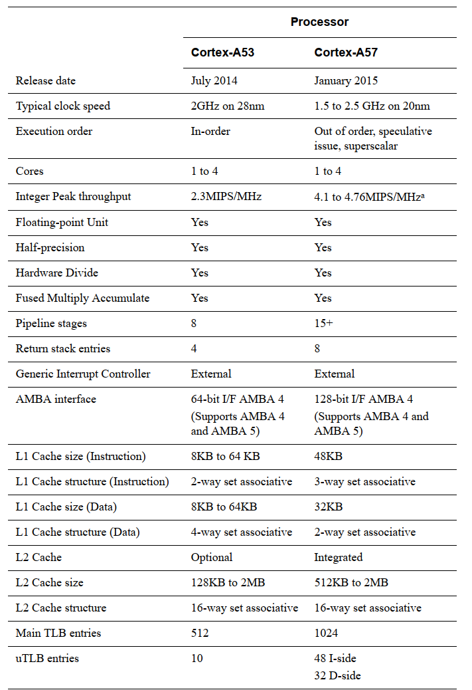

ARM架构基础知识¶
ARM体系结构根据不同的应用场景分为如下三种系列：
-
A系列：面向性能密集型系统
-
R系列：面向实时性应用
-
M系列：面向嵌入式应用
ARMv8是ARM公司发布的第一代支持64位处理器的指令集和体系结构。在扩充64位指令集的同时，还提供了对32位指令集的支持。它还引入了许多新的特性：
-
超大物理地址空间，提供超过4GB物理内存的访问。
-
64位宽的虚拟地址空间。
-
自动事件信号，可以实现节能、高性能的自旋锁。
-
31个64位宽的通用寄存器，可以减少对栈的访问。
-
提供16KB和64KB的页，有助于降低TLB的为命中率。
-
全新的异常处理模型，降低了操作系统和虚拟化的实现复杂度。
-
全新的加载-获取指令、存储-释放指令，专门为C++11、C11以及JAVA内存模型设计。
-
NEON双精度浮点高级SIMD，使得SIMD矢量化能够应用于更广泛的算法集，例如科学计算、高性能计算(HPC)和超级计算机。
常见的采用ARMv8体系结构的处理器内核有：
-
Cortex-A53
-
Cortex-A57
-
Cortex-A72

ARMv8体系定义了两种执行状态：
AArch64：64位的执行状态。
-
提供31个64位的通用寄存器。
-
提供64位的程序计数指针寄存器(PC)、栈指针寄存器（SP）以及异常链接寄存器(ELR)。
-
提供A64指令集。
-
定义ARMv8异常模型，支持4个异常等级——EL0 ~ EL3。
-
提供一组处理器状态寄存器(PSTATE)保存PE的状态。
AArch32：32位的执行状态。
-
提供13个32位的通用寄存器，再加上PC、SP、LR。
-
支持A32和T32(Thumb指令集)指令集。
-
支持ARMv7-A异常模型。
-
定义一组PSTATE保存PE的状态。
ARMv8体系结构根据不同的执行状态提供不同指令集的支持：
-
A64指令集：运行在AArch64状态下，提供64位指令集
-
A32指令集：运行在AArch32状态下，提供32位指令集
-
T32指令集：运行在AArch32状态下，提供16位和32位指令集。
在AArch64状态下，系统寄存器根据不同的异常等级提供不同的变种寄存器——<register_name>_ELx。
ARMv8寄存器¶
AArch64执行状态支持31个64位的通用寄存器：X0 ~ X30。可以使用W来表示低32位的数据，如W0表示X0寄存器的低32位。从W寄存器读取时，忽略相应X寄存器高32位，并保持其它不变。写入W寄存器时，将X寄存器的高32位设置为零。也就是说，将0xFFFFFFFF写入W0会将X0设置为0x00000000FFFFFFFF。
PSTATE寄存器用来表示当前处理器状态。
特殊寄存器：
1.零寄存器
ARMv8体系结构提供两个零寄存器——WZR，XZR，寄存器的内容全是0。
2.PC指针寄存器
用来指向当前运行指令的下一条指令的地址。
3.SP指针寄存器
用来指向当前栈帧的栈顶。每个异常等级都有一个专门的SP寄存器。
4.备份程序状态寄存器(SPSR)
当异常发生时，处理器会将PSTATE寄存器的值暂时保存到SPSR中。
5.异常链接寄存器(ELR)
存放异常返回地址。
6.CuurentEL寄存器
表示PSTATE寄存器中EL字段的值，保存了当前异常等级，可以通过MRS指令读取。
7.DAIF寄存器
表示PSTATE寄存器中{D, A,I,F}字段的值。
8.SPSel寄存器
表示PSTATE寄存器中SP字段的值。
9.PAN寄存器
表示PSTAET寄存器中PAN字段的值。
10.UAO寄存器
表示PSTATE寄存器中UAO字段的值。
11.NZCV寄存器
表示PSTATE寄存器中{N, Z, C, V}字段的值。
异常等级¶

-
EL0：用户特权，运行普通用户程序
-
EL1：系统特权，用于操作系统内核
-
EL3：运行虚拟机监视器
-
EL4：运行安全监控器
异常级别之间的移动遵循以下规则：
-
移动到更高的异常级别，例如从EL0到EL1，表示软件增加执行特权。
-
不能将异常处理降低到较低的异常级别。
-
EL0级别没有异常处理，必须在更高的异常级别处理异常。
-
异常导致程序流程发生变化。异常处理程序的执行以高于EL0的异常级别从与所采取的异常相关的已定义向量开始。例外情况包括：IRQ和FIQ等中断。内存系统中止。未定义的指令。系统调用。这些允许非特权软件对操作系统 安全监视器或管理程序陷阱。
-
通过执行ERET指令来结束异常处理并返回到上一个异常级别。
-
从异常返回可以保持相同的异常级别或进入较低的异常级别。它不能移动到更高的异常级别。
-
安全状态确实会随着异常级别的变化而变化，除非从EL3重新调整到非安全状态
要在相同的异常级别之间切换执行状态，必须切换到更高的异常级别，然后返回到原始的异常级别。例如，有32位和64位应用程序在64位操作系统下运行。在这种情况下，32位应用程序可以执行并生成主管调用(SVC)指令，或接收中断，从而导致切换到L1和AArch64。然后操作系统可以执行任务切换并返回到AArch64中的EL0。实际上，这意味着您不能拥有混合的32位和64位应用程序，因为它们之间没有直接的调用方式。